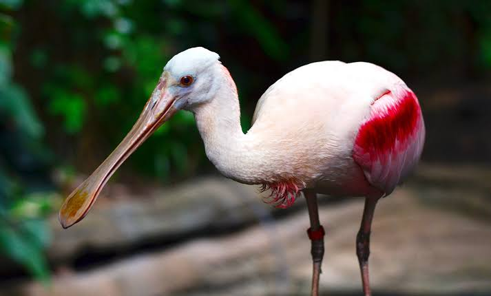

Spoonbills
Birds
Spoonbills are a genus, Platalea, of large, long-legged wading birds. The spoonbills have a global distribution, being found on every continent except Antarctica. The genus name Platalea derives from Latin and means "broad", referring to the distinctive shape of the bill.
Scientific name: Platalea
Family: Threskiornithidae
Phylum: Chordata
Order: Pelecaniformes
Rank: Genus
Mass: Roseate spoonbill: 1 kg, Black-faced spoonbill: 1.2 kg,
Spoonbill, any member of six species of long-legged wading birds that constitute the subfamily Plataleinae of the family Threskiornithidae (order Ciconiiformes), which also includes the ibises.
Spoonbills are found in estuaries, saltwater bayous, and lakes. They feed by sweeping the long bill from side to side in the mud or shallow water and thereby catching mostly small fishes and crustaceans.
When flying, spoonbills extend the neck and legs and flap the wings steadily. They breed in colonies, frequently with ibises and herons, building a large nest of sticks in a low bush or tree and laying three to five white eggs, blotched with reddish brown.
Spoonbills range in length from about 60 to 80 cm (24 to 32 inches). The head is partly or entirely bare. In most species the plumage is white, sometimes with a rosy tinge, but the roseate spoonbill (Ajaia ajaja), of North and South America, about 80 cm
long, is deep pink with a white neck and upper back. It ranges from the Gulf Coast of Texas and the West Indies to Argentina and Chile. In some places it has been exterminated by plume hunters.
The European spoonbill (Platalea leucorodia) is a crested white bird about 60 cm long with cinnamon buff on the foreneck. It breeds in marshes of central and southern Europe and Asia, south to Egypt, India, and Taiwan.
Others are the African spoonbill (P. alba); the lesser spoonbill (P. minor) of eastern Asia; and two Australian species, the royal, or black-billed, spoonbill (P. regia), and the yellow-billed, or yellow-legged, spoonbill (P. flavipes).
Biology of Spoonbills
Breeding
Spoonbills are monogamous, but, so far as is known, only for one season at a time. Most species nest in trees or reed beds, often with ibises or herons.
The male gathers nesting material—mostly sticks and reeds, sometimes taken from an old nest—the female weaves it into a large, shallow bowl or platform which varies in its shape and structural integrity according to species.
The female lays a clutch of about three smooth, oval, white eggs and both parents incubate; chicks hatch one at a time rather than all together.
The newly hatched young are blind and cannot care for themselves immediately; both parents feed them by partial regurgitation. Chicks' bills are short and straight, and only gain the characteristic spoonbill shape as they mature.
Their feeding continues for a few weeks longer after the family leaves the nest. The primary cause of brood failure appears not to be predation but starvation.